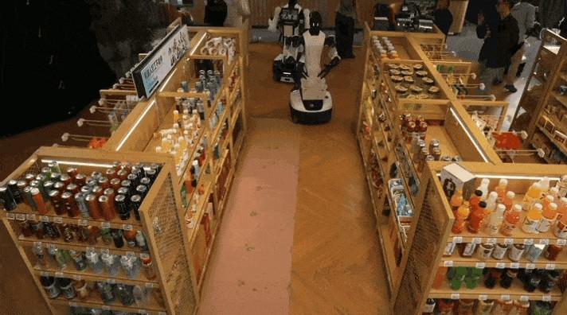

营业现场会改变每一次动作
便利店任务表面上重复，输入却不断变化：顾客移动、包装方向不同、货架位置被改动，同一种饮料还可能有普通和无糖版本。智元报告六台轮式G2分别承担顾客服务、货架巡检、补货、咖啡、结账与热食、清洁等工作。它公布的总完成量为一千七百三十项，四台通过最终评估，两台未达全部条件。试验在上海十一月二日十时至三日十时进行，十一月六日才发布这篇回顾，因此应读作近期现场试验记录，不是当天机器人首发。数字来自组织方，不能把四台通过换算成订单成功率，也不能据此推断六个店员已被替代。
AGIBOT G2 retail trial · 机器人／厂商现场试验回顾

便利店任务表面上重复，输入却不断变化：顾客移动、包装方向不同、货架位置被改动，同一种饮料还可能有普通和无糖版本。智元报告六台轮式G2分别承担顾客服务、货架巡检、补货、咖啡、结账与热食、清洁等工作。它公布的总完成量为一千七百三十项，四台通过最终评估，两台未达全部条件。试验在上海十一月二日十时至三日十时进行，十一月六日才发布这篇回顾，因此应读作近期现场试验记录，不是当天机器人首发。数字来自组织方，不能把四台通过换算成订单成功率，也不能据此推断六个店员已被替代。
报告中的Genie Master通过EEP连接任务计划、机器人执行与反馈，按机器人能力及现场条件分配工作，再分析执行结果。对零售任务而言，识别到商品不等于拿稳商品，拿稳也不等于送到正确顾客；反馈需要覆盖整条操作链。G2产品页另强调力控、交互和多用户对话，但本次公开试验没有逐任务传感器日志，不能自行指定某次失误由哪个相机或模型造成。实施团队应保留订单、取货目标、实际放置结果和人工接管之间的对应关系，才能分清是理解、规划、抓取还是交接出错。
店长需要的是高峰时段能否可靠接续工作，而不是全天累计数字。一次补货可能只移动一件商品，一次服务可能包含多轮对话，两者不能当同等单位相加后推算人力。公开材料也没有完整列出未完成尝试、接管次数、等待时间、清洁耗材准备和设备停机，所以目前无法计算每单总成本。测试采购时应先选一种稳定任务，给出任务开始和结束条件，同时让员工记录他们为机器人做了什么。若取货更快却需要人频繁整理货架、重置姿态或向顾客解释，额外工作会抵消可见的自动化部分。
更有解释力的比较，是在相同门店和时段用人工或现有固定设备完成同类任务，记录错拿、洒漏、拥堵和恢复时间。对普通与无糖饮料、临时挡路和物品换位置等情况，可以保持测试条件一致，观察机器人是否正确停下、重试或交给人。厂商称框架可以回顾成功和失败经验，但现场调整是否真正进入后续策略仍需版本记录证明。这里也不把直播观众人数当成购买需求：围观可能来自新奇，复购则取决于门店是否愿意继续承担空间、维护和员工培训。当前证据足以说明试验覆盖了真实营业变化，尚不足以证明长期经济可行。